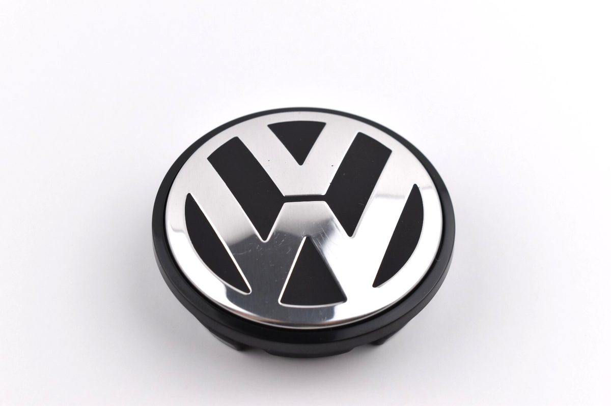
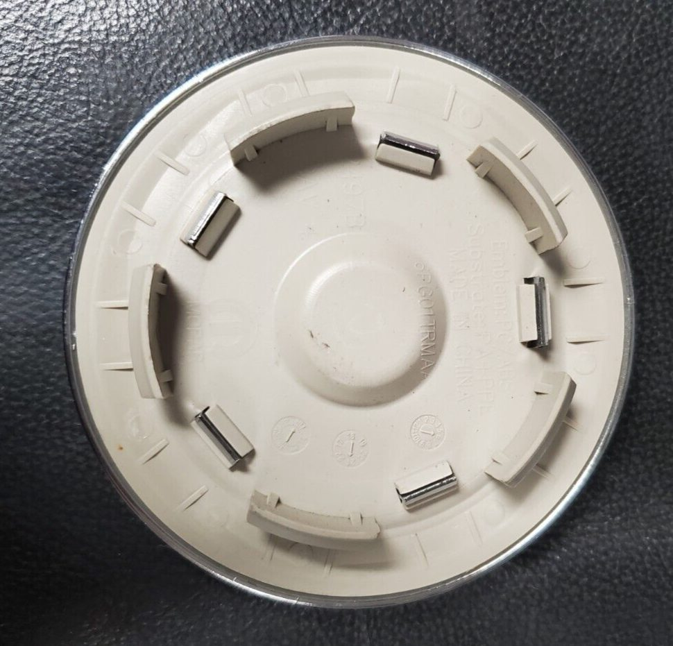

The Knowledge Hub
Center Cap Fitment Guide
Fitment comes down to three measurements and one retention style. Get those four things right and the cap snaps in like factory. Get any one wrong and you're shipping a return.
The three measurements
- Outer diameter (OD) — across the face of the cap, edge to edge. This is the size most listings advertise. It matters for looks and coverage, but by itself it does not guarantee fit.
- Inner / clip diameter (ID) — across the tips of the retention clips on the back of the cap. This is the fitment number. It must match the diameter of the opening in your wheel's center bore where the cap locks in.
- Clip depth — how far the clips extend behind the cap face. Too deep and the cap bottoms out on the axle nut before the clips engage; too shallow and it won't reach the retention groove.
Cap diameter vs. hub center bore — not the same number
This is where most bad orders start. Your wheel has a hub center bore: the machined hole that centres the wheel on the hub. It's a big number — 87.1 mm on a 2004+ F-150. Your cap is a different part with its own opening in the wheel face, and its clip diameter is usually much smaller than the hub bore.
Listings that advertise a cap "for 87.1 mm bore" may mean the wheel it suits, not the cap's own size. When a listing gives both OD and ID for the cap itself, those are the numbers to match against your measurements.
Hub center bore by vehicle (reference)
Useful for confirming which wheel family you have — and a reminder of how different it is from cap size. Bores can still change with generation and market, so treat this as reference data.
| Vehicle | Hub center bore | Bolt pattern | Notes |
|---|---|---|---|
| Ford F-150 (2004+) / Expedition (2003+) | 87.1 mm | 6×135 | Cap size still varies by wheel — see Ford notes |
| Ford cars — Focus, Mondeo, Escort era | 63.4 mm | 4×108 / 5×108 | European Ford fitment |
| Chevrolet Silverado / GMC Sierra 1500 (1999+) | 78.1 mm | 6×139.7 | Shared GM truck platform |
| Chevrolet Tahoe / GMC Yukon / Cadillac Escalade (6-lug) | 78.1 mm | 6×139.7 | Same bore as the 1500 trucks |
| Chevrolet Colorado (2004–2012) | 99.5 mm | 6×139.7 | First-gen Colorado/Canyon only |
| Chevrolet TrailBlazer / GMC Envoy | 78.1 mm | 6×127 | Same bore, different bolt pattern |
| Toyota Land Cruiser (J120 / J90) | 106 / 106.5 mm | 6×139.7 | Toyota 6-lug trucks run large bores |
| Jeep Wrangler / Grand Cherokee (5×127) | 71.5–71.6 mm | 5×127 | Also Dakota/Durango (1991–2004) at 71.5 mm |
| Honda Civic sedan (2006+) / HR-V | 64.1 mm | 5×114.3 | Older Civics (1992–95) used 56 mm |
| Chrysler 300 (2005+) | 72.6 mm | 5×115 | Common LX-platform bore |
| BMW 3 Series | 72.6 mm | 5×120 | Cap is 57 or 68 mm by wheel — see BMW notes |
| Mercedes-Benz C-Class / E-Class | 66.6 mm | 5×112 | OE cap commonly 74 mm — see Mercedes notes |
| Mazda 3 / 6 / CX-5 | 67.1 mm | 5×114.3 | Often confused with the cap size — cap is ~56 mm |
| Toyota Camry / RAV4 | 60.1 mm | 5×114.3 | Car/SUV bore; trucks run much larger |
| Nissan Altima / Rogue | 66.1 mm | 5×114.3 | Cap families are 54 mm (cars) / 63 mm (SUV) |
| Hyundai Elantra / Tucson | 67.1 mm | 5×114.3 | Cap size changed by generation — see Hyundai notes |
| Tesla Model 3 / Model Y | 64.1 mm | 5×114.3 | Cap size disputed by sources — measure first |
| Chevrolet Malibu / Equinox | 70.3 mm | 5×115 | GM car bore; truck bore is 78.1 mm |
Sources: published wheel fitment guides (nupi.nl wheel guide; DocsLib alloy wheel fitment guide; hubcentric-rings.com bore table; Enkei wheel catalog data; opplehouse bolt-pattern and center-bore guide), wheeladaptersusa.com OEM hub specifications, and manufacturer/telematics fitment data for Tesla (Unplugged Performance; ModBargains). Full source list in our research file, available on request.
Common OEM-style cap sizes by application
These are the cap sizes most commonly listed for each application in the replacement market, with the factory part numbers where known. They are starting points for your search — your wheel decides. Two wheels on the same model year can take different caps.
| Application | Common cap size | Reference | Search |
|---|---|---|---|
| Chevy Silverado / GMC Sierra / Tahoe / Yukon / Suburban (2014–2024) | 83 mm (3.25″) OD | OEM 22837060, 20942002 | Amazon |
| Ford F-150 (2012–2014), 20″ alloy wheel | 3″ cap | OEM CL3Z1130B | Amazon |
| Ford F-150 / Expedition (1997–2004) | 180 mm lug-cover cap | OEM YL34-1A096 | Amazon |
| Jeep Grand Cherokee / Wrangler / Compass (many 2005+) | 63–64 mm OD, 2.5″ ID | OEM 1LB77 series | Amazon |
| Jeep Liberty / older Grand Cherokee | 55 mm OD versions | Smaller-cap wheel designs | Amazon |
| Honda Accord / Civic / CR-V / Odyssey (many 2000s–2010s) | 69 mm (2.72″) OD | OEM 44732-S9A-A00 family | Amazon |
| Toyota Camry (2012+) / Corolla (2014+) | 62 mm OD | Common Toyota car cap | Amazon |
| Toyota Corolla (2009–2013) | 57 mm OD | Earlier generation | Amazon |
| Ram 1500, 17″ wheels | ≈2.75″ (≈70 mm) — varies | Changes by wheel; measure | — |
| Cadillac cars (ATS/CTS/CT4/CT5/XT5/XT6, 2016–2024) | 2-5/8″ (≈67 mm) | OEM 23212548; Escalade uses the 83 mm GM truck cap | Amazon |
| Dodge Charger / Challenger (2017–2023) | 63 mm | OEM-style 6CZ27RXFAA family | Amazon |
| BMW / Mini (by wheel) | 57 mm or 68 mm OD | European OE-cap fitment references (DEZENT) | Amazon |
| Mercedes-Benz | 74 mm OD | European OE-cap fitment references (DEZENT) | Amazon |
| Audi cars | 60 mm OD | OEM 4B0601170; Q-series SUVs differ | Amazon |
| Volkswagen (Jetta/Passat/Golf/CC/Tiguan) | 65 mm OD, 2.5″ ID | OEM 3B7601171; VW range runs 56–66.5 mm OD | Amazon |
| Porsche 911 / Macan / Cayenne | 76 mm OD, 3″ ID | OEM listings; centre-lock wheels excluded | Amazon |
| Volvo | 64 mm OD | European OE-cap fitment references (DEZENT) | Amazon |
| Jaguar (S-Type/X-Type/XF/XJ/XK) | 59 mm OD, 50 mm ID | OEM C2D9611 family | Amazon |
| Land Rover / Range Rover | 62 mm OD, 47.5 mm ID | OEM RRJ000010 / RRJ500030; 63 mm variants exist | Amazon |
| Alfa Romeo / Peugeot / Citroën | 60 mm OD | European OE-cap fitment references (DEZENT) | Amazon |
| Lexus cars (2006–2013) | 62 mm OD | OEM 42603-30590 | Amazon |
| Acura (many models) | 69 mm OD, 64 mm ID | OEM 44732-SY8-A100 family — shared with Honda | Amazon |
| Nissan cars / Rogue Sport, Quest | 54 mm OD, 2.125″ ID | OEM 40343-AU51A family | Amazon |
| Nissan trucks / SUVs (Frontier, Pathfinder, Rogue) | 63 mm (2.5″) | OEM 40342-6TA1A | Amazon |
| Mazda (3/5/6, CX-7, CX-9, MX-5, RX-8) | ~56 mm OD, 57 mm clip ID | OEM BBM2-37-190 | Amazon |
| Subaru (many models) | 60 mm OD, 55 mm ID | OEM 28821SA030 / 28821VA000 | Amazon |
| Mitsubishi cars | 60 mm commonly listed | Outlander reported 65–70 mm — varies, measure | Amazon |
| Hyundai Elantra | ≈66 mm (2011 gen) / 60 mm (2017 gen) | Generation split — see Hyundai notes | Amazon |
| Hyundai / Kia (all) | By part number | 52960-xxxxx cap family; size varies by model | Amazon |
| Tesla (Model 3/Y/S/X) | Sources disagree: 50.8 / ~56 / 58 mm | Published conflict — measure first, see Tesla notes | — |
Amazon links above are affiliate links (Amazon Associates, uxk-20) — as an Amazon Associate, we earn from qualifying purchases, at no extra cost to you. No prices are stated; search results vary.
Cap face styles — the catalog view
Fitment is about the back of the cap; shopping is about the face. The big catalogs (centercaps.net's browse-by-make store is the model) sort caps by face style as well as size — dome, flat, smoothy, spinner, rally and scallop — across a diameter range running from 2.25″ up to 12″ once you include hubcaps and full wheel covers. Two caps with identical clip specs and different faces both "fit" — style is how you match a set.
- Center caps — the snap-in discs this site is about: bore-sized, emblem-faced.
- Hubcaps / wheel covers — full-face covers that span the whole wheel (steel-wheel cars, Tesla aero covers). Different product, different sizing (by wheel diameter in inches), same catalogs.
- Floating / spinner caps — weighted caps that keep the emblem upright while the wheel turns. A style upgrade sold in standard OEM sizes — the measurement rules don't change.
Clip & retention styles
Snap-in plastic clips
The standard. Molded ABS clips flex into a groove inside the wheel's center bore. Installed with finger pressure, removed with a trim tool. Most passenger cars and many trucks. Clips fatigue with age and heat cycles — if one cap keeps loosening, the clips are done.
Spring / wire ring
A metal ring sits behind the plastic tabs and keeps constant tension on them. Holds tighter than clips alone and tolerates slightly worn bores. If your old cap has the ring, your replacement needs it too — and remove the old ring from the wheel before snapping the new cap in.
Screw-on
Small Torx or Allen screws fasten the cap to the wheel. Common on luxury and performance wheels. Best retention of any style, but screws seize in salt country — a dab of anti-seize at install saves grief later.
Push-through (from behind)
The cap is pushed through the bore from the back of the wheel and held by a retaining ring or its own flange. Common on truck and off-road wheels. Can't be stolen or lost from the front — but the wheel has to come off to change it.
Lug-cover caps
Oversized caps (like the 180 mm F-150 caps) that cover the lug nuts as well as the bore, held by the lugs themselves or threaded plastic lug covers. Measure across the whole cap and confirm the lug count and spacing, not just the bore.
"Universal" caps
Adjustable-tab caps sold to fit a range of common bores. They can work, but "universal" means "fits several sizes approximately." If you go this route, your measured ID must fall inside the cap's stated range and the retention style must match your wheel.
The fitment checklist
- Measure your old cap (OD, clip ID, clip depth) — or measure the wheel opening if the cap is gone.
- Count the clips and note the retention style.
- Read the part number molded into the back of the factory cap, if it's still there.
- Match all of it against the listing — not just the vehicle name in the title.
- Buy from a seller with a real return policy the first time you order for a new wheel.
See it on real caps

